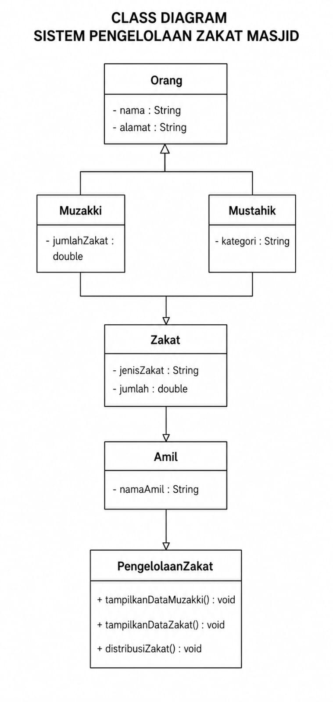
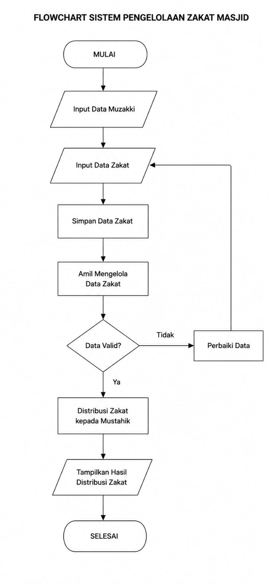

Uliya Gumpari | 251410008 | Kelas: SI2A
Agis Lyoni Putri | 251410022 | Kelas: SI2A
Zakat merupakan salah satu kewajiban umat Islam yang harus dikelola dengan baik agar dapat disalurkan kepada orang yang berhak menerimanya. Namun, masih banyak masjid yang melakukan pendataan zakat secara manual sehingga sering terjadi kesalahan pencatatan data, kesulitan menghitung jumlah zakat yang terkumpul, dan lambatnya proses pembuatan laporan.
Oleh karena itu, diperlukan sebuah sistem yang dapat membantu pengelolaan zakat secara lebih terstruktur dengan menggunakan konsep Object Oriented Programming (OOP).
Sistem Pengelolaan Zakat Masjid menggunakan OOP karena terdapat beberapa objek yang saling berhubungan, yaitu Orang, Muzakki, Mustahik, Zakat, dan Amil.
Dengan OOP, setiap objek memiliki atribut dan method masing-masing sehingga program menjadi lebih terstruktur, mudah dipahami, mudah dikembangkan, serta mengurangi pengulangan kode melalui konsep inheritance.
Dalam sistem pengelolaan zakat masjid terdapat beberapa class yang digunakan untuk merepresentasikan data dan proses bisnis.
Class merupakan cetakan atau blueprint yang digunakan untuk membuat object. Sedangkan object merupakan implementasi nyata dari sebuah class yang digunakan saat program dijalankan.
Pada sistem ini terdapat hubungan inheritance dan hubungan penggunaan antar class.
Orang
├── Muzakki
└── Mustahik
PengelolaanZakat
│
├── Mengelola Muzakki
├── Mengelola Mustahik
├── Mengelola Zakat
└── Mengelola Amil
Class Orang berperan sebagai parent class. Class Muzakki dan Mustahik merupakan child class yang mewarisi atribut nama dan alamat dari class Orang. Sedangkan class PengelolaanZakat digunakan untuk mengatur seluruh proses bisnis dalam sistem.
Class merupakan cetak biru (blueprint), sedangkan object merupakan hasil pembuatan dari class.
Sistem Pengelolaan Zakat Masjid memiliki alur proses bisnis yang menggambarkan bagaimana zakat dikelola dari awal hingga disalurkan kepada penerima.
Muzakki
↓
Membayar Zakat
↓
Data Zakat
↓
Pengelolaan Zakat
↓
Amil
↓
Mustahik
Atribut: nama, alamat
Method: tampilkanInfo()
Atribut: jumlahZakat
Method: bayarZakat()
Atribut: kategori
Method: terimaZakat()
Atribut: jenisZakat, jumlah
Method: tampilkanInfo()
Atribut: namaAmil
Method: distribusiZakat()
Class yang digunakan dalam program ini adalah Orang, Muzakki, Mustahik, Zakat, Amil, dan PengelolaanZakat.
Object yang dibuat pada program adalah muzakki, mustahik, zakat, amil, dan sistem.
Konsep inheritance diterapkan pada class Muzakki dan Mustahik yang mewarisi atribut dari class Orang menggunakan keyword extends.
Data disimpan di dalam atribut setiap class sehingga informasi dapat dikelola secara terstruktur.
Seluruh proses bisnis pengelolaan zakat dipusatkan pada class PengelolaanZakat sehingga class lain hanya berfokus pada penyimpanan data.
Class diagram ini menunjukkan struktur sistem pengelolaan zakat masjid yang terdiri dari class Muzakki, Mustahik, Zakat, Amil, dan Pengelolaan Zakat.

Hubungan antar class menggambarkan proses pengelolaan data zakat mulai dari pengumpulan sampai proses distribusi kepada mustahik.
Untuk menggambarkan kondisi nyata dalam pengelolaan zakat masjid, sistem menggunakan lebih dari 10 data muzakki sebagai contoh data pembayaran zakat.
Data di atas digunakan sebagai simulasi untuk menunjukkan bagaimana sistem dapat mengelola banyak data muzakki dan mustahik dalam proses pengumpulan dan distribusi zakat.
Flowchart ini menggambarkan alur proses pengelolaan zakat mulai dari input data muzakki, data zakat, proses pengelolaan oleh amil, hingga distribusi zakat kepada mustahik.

Mulai
1. Membuat objek Muzakki
2. Membuat objek Mustahik
3. Membuat objek Zakat
4. Membuat objek Amil
5. Membuat objek PengelolaanZakat
6. Menampilkan data Muzakki
7. Menampilkan data Zakat
8. Menampilkan data Amil
9. Melakukan distribusi zakat kepada Mustahik
10. Menampilkan hasil distribusi zakat
Selesai
Source code berikut merupakan program lengkap yang menggabungkan seluruh class yaitu Orang, Muzakki, Mustahik, Zakat, dan Amil menjadi satu sistem pengelolaan zakat masjid.
// Nama : Uliya Gumpari (251410008)
// Nama : Agis Lyoni Putri (251410022)
// Kelas : SI2A
// =====================================
// CLASS DATA
// =====================================
class Orang {
String nama;
String alamat;
Orang(this.nama, this.alamat);
}
class Muzakki extends Orang {
double jumlahZakat;
Muzakki(
String nama,
String alamat,
this.jumlahZakat,
) : super(nama, alamat);
}
class Mustahik extends Orang {
String kategori;
Mustahik(
String nama,
String alamat,
this.kategori,
) : super(nama, alamat);
}
class Zakat {
String jenisZakat;
double jumlah;
Zakat(this.jenisZakat, this.jumlah);
}
class Amil {
String namaAmil;
Amil(this.namaAmil);
void tampilkanInfo() {
print("Nama Amil : $namaAmil");
print("Tugas : Mengelola dan mendistribusikan zakat");
}
}
// =====================================
// CLASS LOGIKA BISNIS
// =====================================
class PengelolaanZakat {
void tampilkanDataMuzakki(
Muzakki muzakki) {
print("Nama : ${muzakki.nama}");
print("Alamat : ${muzakki.alamat}");
print("Jumlah Zakat : Rp${muzakki.jumlahZakat.toInt()}");
}
void tampilkanDataZakat(
Zakat zakat) {
print("Jenis Zakat : ${zakat.jenisZakat}");
print("Jumlah : Rp${zakat.jumlah.toInt()}");
}
void distribusiZakat(
Amil amil,
Mustahik mustahik,
Zakat zakat) {
print(
"${amil.namaAmil} menyalurkan zakat kepada ${mustahik.nama}"
);
print(
"${mustahik.nama} menerima bantuan zakat sebesar Rp${zakat.jumlah.toInt()}"
);
}
}
// =====================================
// PROGRAM UTAMA
// =====================================
void main() {
Muzakki muzakki =
Muzakki(
"Bapak H. Abdullah",
"Palembang",
750000,
);
Mustahik mustahik =
Mustahik(
"Ibu Siti Aminah",
"Palembang",
"Fakir",
);
Zakat zakat =
Zakat(
"Zakat Fitrah",
750000,
);
Amil amil =
Amil(
"Uliya dan Agis",
);
PengelolaanZakat sistem =
PengelolaanZakat();
print("=== SISTEM PENGELOLAAN ZAKAT MASJID ===\n");
print("DATA MUZAKKI");
sistem.tampilkanDataMuzakki(
muzakki);
print("\nDATA ZAKAT");
sistem.tampilkanDataZakat(
zakat);
print("\nDATA AMIL");
amil.tampilkanInfo();
print("\nDISTRIBUSI ZAKAT");
sistem.distribusiZakat(
amil,
mustahik,
zakat);
}
=== SISTEM PENGELOLAAN ZAKAT MASJID === DATA MUZAKKI Nama : Bapak H. Abdullah Alamat : Palembang Jumlah Zakat : Rp750000 DATA ZAKAT Jenis Zakat : Zakat Fitrah Jumlah : Rp750000 DATA AMIL Nama Amil : Uliya dan Agis Tugas : Mengelola dan mendistribusikan zakat DISTRIBUSI ZAKAT Uliya dan Agis menyalurkan zakat kepada Ibu Siti Aminah Ibu Siti Aminah menerima bantuan zakat sebesar Rp750000
Sistem Pengelolaan Zakat Masjid dapat diselesaikan menggunakan Object Oriented Programming (OOP) karena melibatkan beberapa objek yang saling berhubungan. Dengan OOP, program menjadi lebih terstruktur, mudah dipahami, mudah dikembangkan, dan lebih efisien dalam mengelola data zakat.